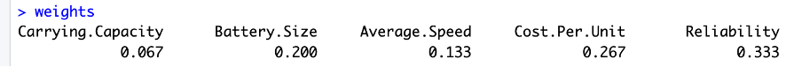
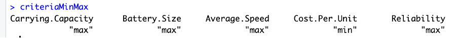
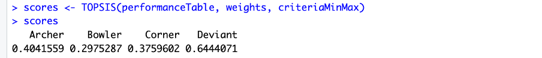
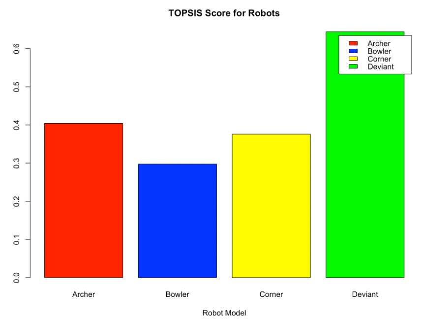
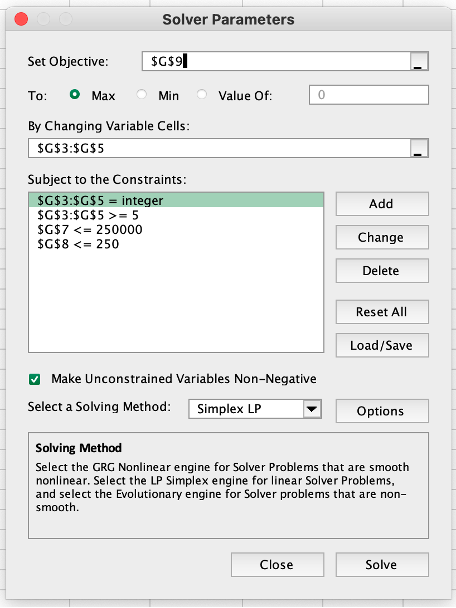
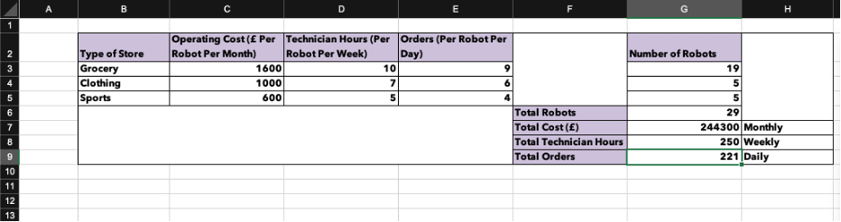

In the bustling city of Leeds, the start-up AutonomousShipment is gearing up to revolutionize last-mile logistics with the integration of robot drones into their delivery system. As part of their innovative approach, AutonomousShipment plans to use these drones to deliver products from grocery, clothing, sports, and tech stores directly to customers' doorsteps.
Setting the Stage for a Groundbreaking Trial
AutonomousShipment is preparing for a one-month trial around Leeds to evaluate their four robot drone models. The trial's primary goal is to improve operational efficiency and enhance the customer experience, all while staying within the allocated budget. The management team has identified two critical tasks for this trial:
1. Selecting the Optimal Robot Model
2. Allocating Robots to Various Stores
Task 1: Selecting the Optimal Robot Model
The first task is to determine which robot model to use for the trial. The four prototypes under consideration are:
- Robot A032 (Archer)
- Robot B23 (Bowler)
- Robot CJKL (Corner)
- Robot DSXX (Deviant)
Multi-Criteria Decision Analysis (MCDA)
To make an informed decision, we utilized the TOPSIS (Technique for Order of Preference by Similarity to Ideal Solution) method. This approach evaluates each model based on several key criteria, weighted by their importance as specified by the management team:
- Reliability (5/5)
- Cost per Unit (4/5)
- Battery Size (3/5)
- Average Speed (2/5)
- Carrying Capacity (1/5)
Reliability has been given the highest priority by the management and was rated 5. Cost per Unit was rated 4 as it was supposed to weigh at least 25% of the total consideration. The importance of the size of the Battery was of 3 out of 5 and it has been rated 3. Average Speed and Carrying Capacity were rated 2 and 1 respectively based on the recommendation by the team.
| Criterion |
Rating |
Weight |
| Carrying Capacity |
1 |
1/15 = 0.067 |
| Battery Size |
3 |
3/15 = 0.200 |
| Average Speed |
2 |
2/15 = 0.133 |
| Cost per Unit |
4 |
4/15 = 0.267 |
| Reliability |
5 |
5/15 = 0.333 |
TOPSIS Analysis
TOPSIS is ideal for this scenario as it considers both the best and worst possible outcomes for each criterion. By calculating the Euclidean distance of each option from these ideal and non-ideal points, TOPSIS provides a clear ranking of alternatives. This method helps us balance multiple criteria, maximizing those that benefit us (like reliability and battery size) and minimizing costs.



Figure 1: TOPSIS Analysis.
After a thorough analysis using TOPSIS, Robot DSXX (Deviant) emerged as the top choice. Here's why Deviant stands out:

Figure 2: TOPSIS Score of Robots.
- Reliability: High reliability, ensuring maximum uptime and minimal disruptions.
- Battery Size: Lasts up to 24 hours, reducing the need for frequent charging.
- Average Speed: 10 km/h, enabling faster deliveries.
Thus, Robot DSXX (Deviant) is recommended for the trial, promising efficient and reliable delivery performance.
Task 2: Allocating Robots to Different Stores
With Robot DSXX selected, the next task involves strategically deploying these robots to grocery, clothing, and sports equipment stores. The objectives are clear:
- Stay within the budget of 250,000 GBP.
- Ensure each store has a minimum of 5 robots.
- Maximize order completions while adhering to technical support constraints.
Cost and Operational Considerations
Here’s a breakdown of the costs associated with deploying the Deviant robots:
| Store Type |
Purchase Cost (GBP) |
Operating Cost (GBP/Month) |
Total Cost (GBP) |
| Grocery |
7,100 |
1,600 |
8,700 |
| Clothing |
7,100 |
1,000 |
8,100 |
| Sports Equipment |
7,100 |
600 |
7,700 |
Linear Programming
Linear Programming allows us to handle multiple conflicting objectives efficiently. In this case, we needed to maximize order completions while adhering to budget and technical support constraints. LP provides a systematic approach to finding the optimal solution that balances these competing goals.

Figure 3: Linear Programming.
Using Linear Programming, we formulated a plan that optimizes robot allocation:

Figure 4: Formulated Allocation of Robots.
- Grocery Stores: 19 robots
- Clothing Stores: 5 robots
- Sports Equipment Stores: 5 robots
This distribution ensures:
- Total trial cost: 244,300 GBP, within the budget.
- Technician support: 250 hours per week, fully utilized.
- Order completion capacity: Up to 221 orders per day.
Summary and Strategic Insights
AutonomousShipment's trial with Robot DSXX (Deviant) is set to pave the way for a new era in last-mile delivery. Here's a recap of our strategic plan:
- Deploy 29 Deviant robots: 19 for grocery, 5 each for clothing and sports equipment stores.
- Cost-efficient: Expected trial cost of 244,300 GBP.
- Maximized operational efficiency: Capable of delivering 221 orders per day with optimal technician support.
By leveraging Robot DSXX, AutonomousShipment is poised to enhance delivery reliability and customer satisfaction, all while maintaining a cost-effective and technologically advanced approach.